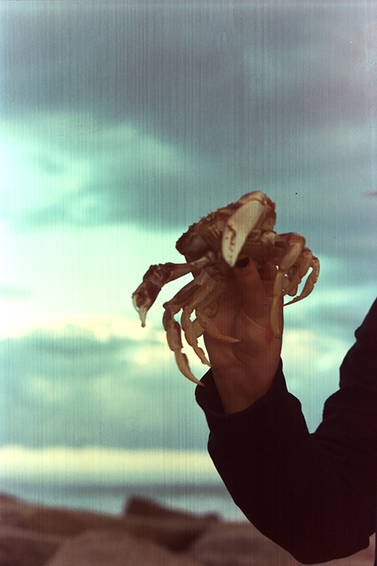
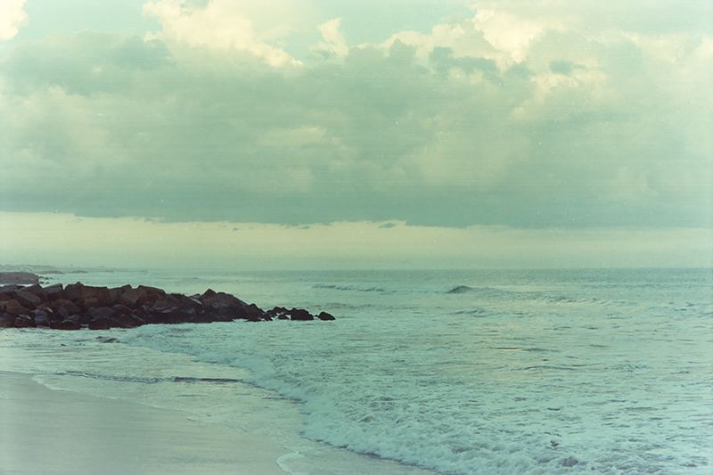
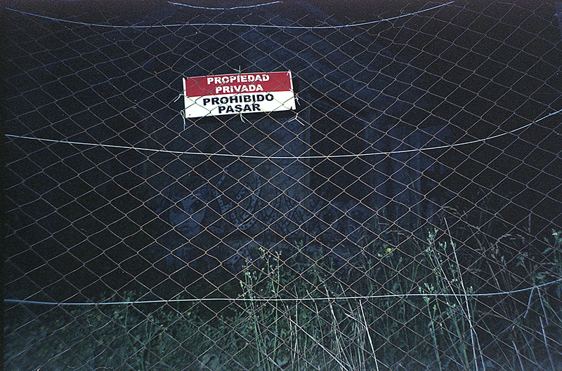
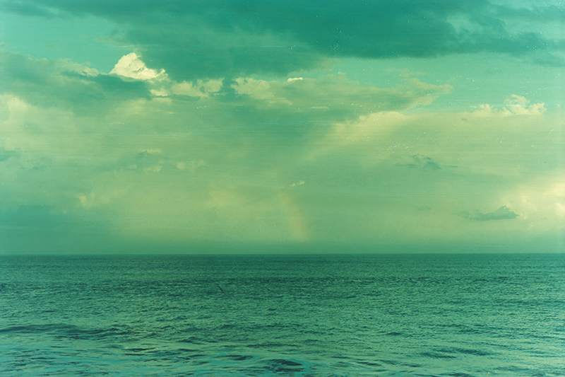
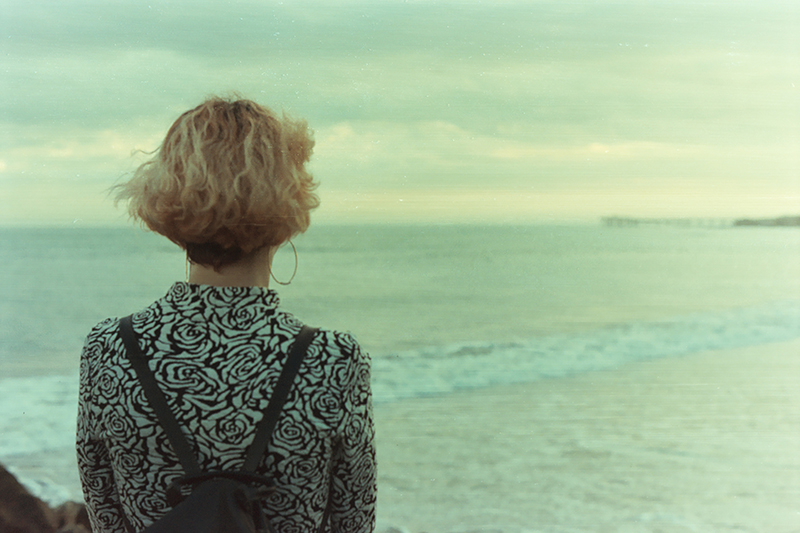
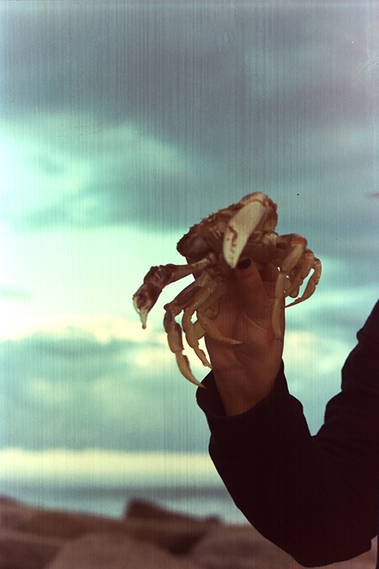
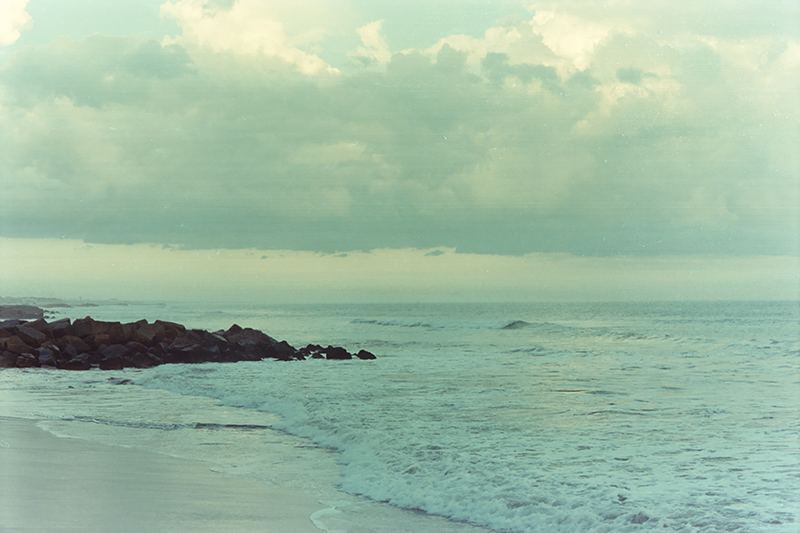
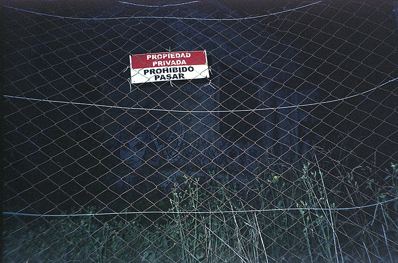
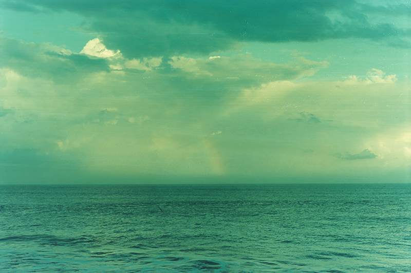
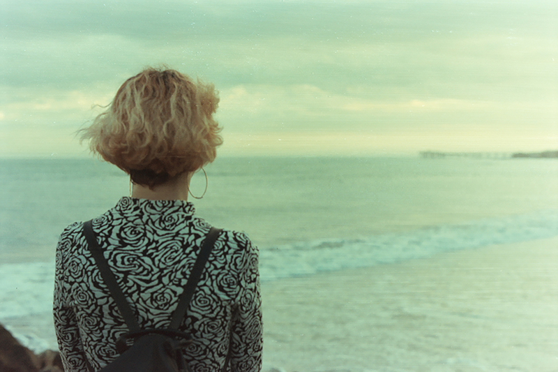

Envolverse un una ola, oír los rumores de la espuma, sentir la sal corroer la piel muerta, ahogar el
llanto en un profundo azul y saber que sobre nosotros un espejo refleja a los presos de la luz. Una
foto perfecta separada en un viaje relámpago, con sus postales dispersas nos engañamos en un solo
recuerdo, el que nos permite recrear, así sea necesario, el camino recorrido. Así, estas fotografías
hacen de nuestro año una servilleta húmeda, olvidada en medio del llanto y, aturdidos por la belleza
del mar, un risa se escapa de nuestra boca.


 









Florencia Viniarsky (1995)
estudiante en UNA de artes audiovisuales por tiempo indeterminado.
escribo poesia y saco fotos en 35 mm.